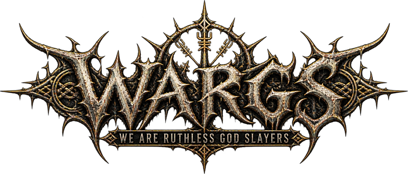

Le monde est hostile.
Maîtrise ton aventure.
Un pouvoir oublié, une saison qui change, un coffre à ranger. Retrouve les gestes et les mécaniques de ton aventure.

De quoi as-tu besoin ?
Combat & pouvoirs
Classes, magie, équipement et conséquences de la mort : les mécaniques à comprendre pour progresser.
Explorer ↗12 fichesMonde & saisons
Biomes, saisons, ruines, navigation et plongée : prépare tes expéditions avant de quitter la base.
Explorer ↗9 fichesConstruction
Rotation précise, plans, pièces supplémentaires et protection de la base : retrouve les gestes du bâtisseur.
Explorer ↗3 fichesCultures & ressources
Planter, récolter et utiliser les ressources de l’aventure, avec leurs conditions de croissance.
Explorer ↗11 fichesInventaire & stockage
Emplacements supplémentaires, coffres, recettes épinglées et réserves : gagne du temps entre deux sorties.
Explorer ↗4 fichesCoop & commerce
Quêtes, groupes, marchands et services : les outils pour s’organiser et commercer.
Explorer ↗5 fichesPersonnage & interface
Apparence, caméra, menus et confort visuel : les interfaces que tu utilises au quotidien.
Explorer ↗Toujours à portée de mainLe clavier WARGS
Un clavier AZERTY, une couleur par mod et les commandes détaillées en texte.
Afficher les raccourcis ↗